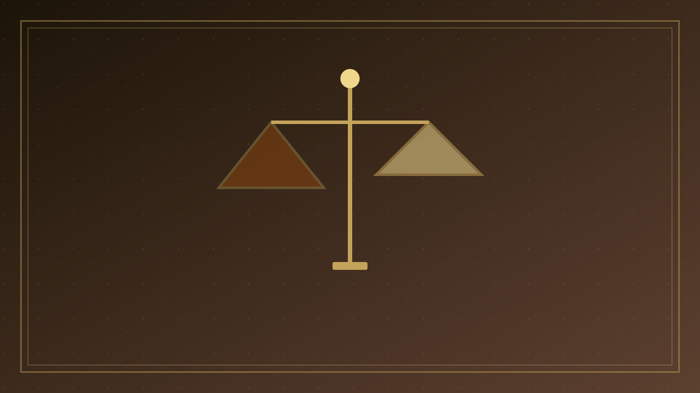
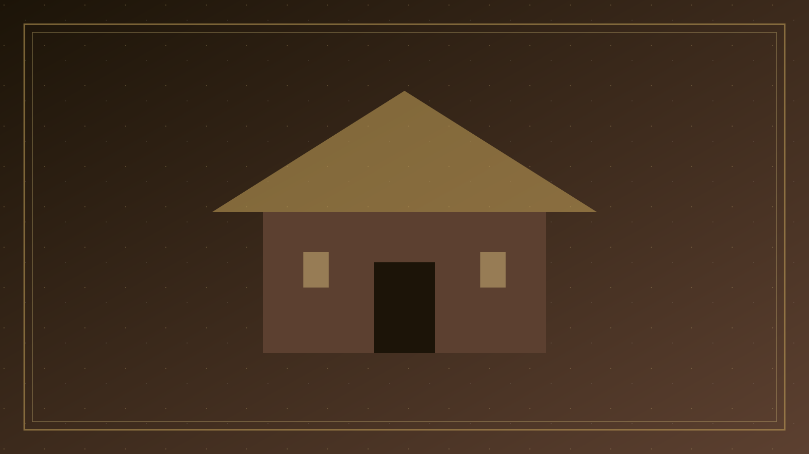

專論總覽
以教導、裝備與使徒傳承服事聖道；不是學位換得救，也不是把教會做成補習社
本篇已按原有標題拆成可獨立閱讀的分題。請選一題進入；正文未經改寫，只把長頁分開。

01
問題意識
一、問題意識：「學」必須落在聖約裡 華人教會常說「興學傳道」。
02
妥拉與智慧
二、妥拉與家中教導：記憶，不是學院 申命記把以色列重新放在約的面前。
- 家中教導
- 智慧傳統
03
教導的職分
四、祭司、利未人與先知：教導是職分，不是嗜好 舊約不只把教導留給家庭。

04
夫子與使徒
五、耶穌為夫子：傳道與興學是一件事的兩面 四福音沒有把耶穌寫成只會行神蹟的巡迴醫治者。
- 耶穌為夫子
- 使徒的教訓
05
保羅與內容
七、保羅：學房的敘事，與交託的命令 保羅在以弗所，先在會堂放膽講道；有人心硬不信、毀謗這道，他就離開，「也叫門徒與他們分離，便在推喇奴的學房天天辯論。
- 學房與交託
- 所教的是基督

06
張力與分辨
九、張力與分辨：反智與學閥都不是使徒的路 華人教會在這題上常擺盪於兩極。

07
牧養結論
十、牧養結論：興學為了傳道與守道 把經文走完一遍，題旨其實單純。